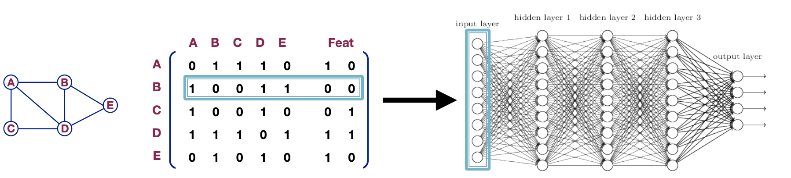
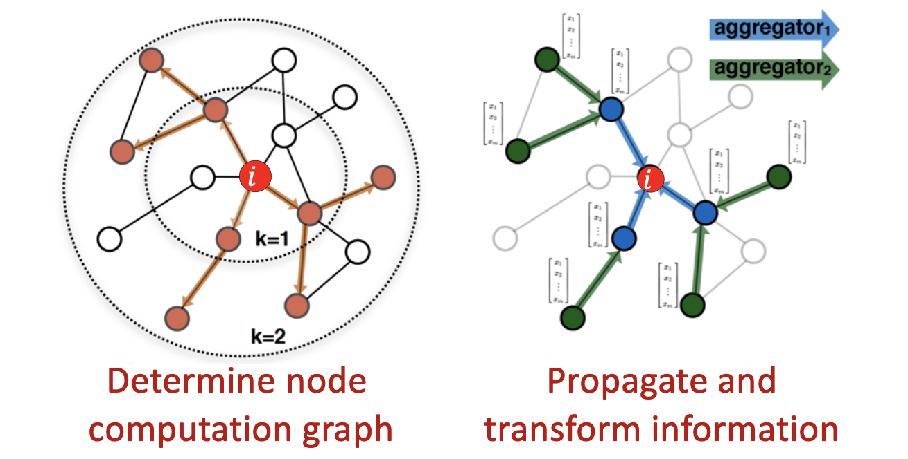

cs224w-图机器学习2
cs224w-图机器学习2：GNN 图神经网络
前面几节内容主要介绍了节点嵌入的概念，也就是说我们可以将一个图中的节点映射到一个的 d 维向量上，而这种映射方式使得相似的节点对应的向量更接近，但主要的问题还是，我们如何学习出一个映射函数 f，而图嵌入的两个核心组件是编码器和相似度函数，图神经网络 GNN 提供了一种基于深度学习的节点嵌入方法。
深度学习基础
介绍了监督学习、损失函数、机器学习中的优化、梯度向量、随机梯度下降等基本概念，不过这些内容已经反复接触过了，因此也就不再专门整理记录
深度学习中的函数往往更为复杂，并且在反向传播进行参数更新的过程中需要用链式法则来求梯度，但总的来讲，不管是传统的监督机器学习还是深度学习，我们的优化目标都是：
图深度学习
问题的定义
我们把要研究的图记为 ，图中所有节点构成集合 ， 是图的接邻矩阵
用 表示图节点的特征矩阵，每个节点具有 维的特征，节点的特征可以根据图的实际情况来选取
一种很 naive 的方法是将图 G 的接邻矩阵和特征矩阵进行合并，然后放到一个深度神经网络中进行学习，但是这样一来就会有 数量级的参数，并且对于不同大小的图需要重新设计网络结构，这样的处理方式也使得结果对节点的顺序非常敏感

图卷积神经网络的结构
联想到 CNN 通过卷积的方式来提取和融合邻近像素点的特征，图结构中也可以聚合节点的邻近节点的特征，但是相比于图像，图结构往往不具有一个固定的子结构或者滑动窗口可以用来定义图中的卷积，并且是 permutation invariant（节点顺序不固定）的，我们可以使用局部的邻近节点的特征来生成图节点的嵌入向量。所以核心思想就是通过聚合邻居来生成节点嵌入
每个节点生成了一张计算图，来表示其特征融合的过程

这种神经网络可以是任意深度，每一层有节点的嵌入：
- 第 0 层只用输入的特征表示节点的嵌入向量
- 第 k 层使用从 k 个 away 之前得到的信息来进行节点嵌入

上述结构只是一种最基本的框架，最主要的区别在于图中的 灰色box 对应的内容，也就是信息聚合的方式和之后的一系列处理
一种比较常见的方式是将从邻居获取信息求平均，再应用神经网络
是第 层节点 的嵌入， 是一个非线性的激活函数， 就是邻居节点信息求平均的计算
在得到了嵌入向量之后可以使用损失函数和随机梯度下降的方式来训练权重参数 W 和 B
我们可以将上面的表达式进行向量化来提高计算的效率，用对角矩阵 D 来表示 ，这样一来就有
并且令, 这样一来上面的式子就可以表示为：
如何训练 GNN
监督学习的训练方式：定义一个 loss 函数并进行优化，相似的节点会有相近的嵌入向量，因此我们可以定义：
CE 表示交叉熵，y 是表示两个节点相似的标签，DEC 是解码器，比如可以使用内积来定义
相似度的定义可以用前面提到的任何方法，包括随机游走，矩阵分解等等
无监督学习的训练方式：没有节点的标签，可以使用图的结构作为监督。对于一个节点分类的问题，可以用监督学习的方式直接训练模型，使用交叉熵 loss 表示如下：
这里的 y 表示节点的标签，而 z 表示嵌入向量，表示分类的权重
- 但是最终，我们学习到的一系列参数和模型是需要在新的图和新的节点上测试效果的，因此需要使模型拥有更好的泛化能力
图神经网络模型的 Pipeline
- 定义一个邻居节点聚合的方式
- 定义一个基于嵌入向量的损失函数
- 使用一系列节点进行训练
- 生成节点的嵌入，用于实际的任务中
GNN 概览
GNN 由一系列 GNN 层线性组合构成，而 GNN 层包含了 message 和 aggregation 等多层次的信息，当我们训练一个 GNN 的时候可以从监督学习的视角出发进行训练，也可以从非监督学习的视角出发进行训练

GNN 的层结构
GNN 单独的层结构将多个向量组合成一个单独的向量，需要经过两个步骤的处理，分别是 message 和 aggregation，将输入的节点嵌入向量转化成输出的节点嵌入向量
message 步骤：每个节点都会创建一个消息发送给附近的一系列节点，这样一来就有
aggregation 步骤：每个节点会收集从其他节点发来的消息并进行一定的处理，比如求和，求均值或者最大值等等
但是只有 aggregation 的话每一层的节点输出的嵌入向量都不包含其自身从上一层携带回来的特征，因此可以将 message 步骤和 aggregation 步骤得到的结果进行合并作为最终的输出结果
可以在两个过程中使用一些非线性的激活函数
GCN
对于图卷积网络 GCN 的层结构，上面已经介绍过了它每一层的嵌入向量更新方式
这个公式里面其实分成 message 和 aggregation 两个部分，其中求和就是 aggregation，而就是每个节点产生并广播到所有邻居节点的 message
GraphSAGE
GraphSAGE 是另一种架构的图神经网络，其核心思想是使用一个可微分的函数将邻居节点传递过来的信息应设成一个单独的 vector。每一层的更新方式是：
这种架构的 Message 是每个邻居节点发过来的嵌入向量，通过 ACG 函数进行 aggregation，之后再和当前节点本身的
其中聚合函数 ACG 有多种不同的选择方式，比如使用均值函数，或者进行池化 (最大池化，最小池化等等)，也可以使用 LSTM 来进行邻近节点的 reshuffled
- Mean：
- Pool：（对邻居信息向量做转换，再应用对称向量函数
- LSTM：（在reshuffle的邻居上应用LSTM）
可以在每一层都可以进行一个 l2 标准化，即 ，使用了标准化操作之后就会使得所有嵌入向量的 L2 范数统一，可以给性能带来比较大的提升。其中
GCN vs. GraphSAGE
核心思想：基于local neighborhoods产生节点嵌入，用神经网络聚合邻居信息
GCN：邻居信息求平均，叠网络层
GraphSAGE：泛化neighborhood aggregation所采用的函数
GAT 与注意力机制
GAT 是 Graph Attention Network，即在图神经网络中加入了注意力机制，我们可以使用来表示节点 v 的邻居节点 u 的重要程度，这样的网络可以使网络在计算时将注意力集中到一些比较重要的节点上面去。
一种的计算方式
首先定义一个计算重要性系数的函数 a 并计算两个相邻节点的重要程度

然后使用 softmax 来计算出权重

这里的 a 函数往往是先进行嵌入向量的连接再通过一个线性函数进行运算然后输出结果
多端注意力机制：创建多个注意力分数并进行连接
注意力机制的优点：
- 最主要的优点是允许对不同的邻居节点采取不同的权重来突出一些重要的邻居
- 并且注意力权重的计算可以并行，提高了计算的效率
- 提高了存储的效率
通用的 GNN 层设计

- 批标准化：可以是的神经网络的训练更加稳定，做法就是求出每一层输出结果的平均值和方差，然后进行标准化处理，可以防止过大或者过小的数据出现而导致梯度消失或者梯度爆炸等问题
- Dropout：用来避免神经网络过你和，在训练的时候，以一定概率将一些神经元设置成 0(即中途退出了计算)，在测试的时候使用所有的神经元参与到计算中
- 在 GNN 中一般在线性层使用 dropout
- 激活：使用一些非线性的激活函数，将特征非线性化，常见的非线性激活函数有 sigmoid，ReLU 等等
GNN 的层级架构
上面主要介绍的是 GNN 单层的设计方式和基本的 idea 以及一些常用的神经网络 tricks，但是在设计好了若干层神经网络之后，还需要用一定的规则将其组合起来，在 GNN 中往往就是将多个层级进行线性的组合，有的时候也会用的 skip connection 机制。
过平滑问题：是指所有的节点嵌入向量最终收敛到了同一个值上，这是一个非常糟糕的现象，因为我们希望不同的节点的嵌入向量是不同的，否则无法区别出不同的节点
接受域 Receptive Field：是决定一个节点的嵌入向量的节点集合，在一个 K 层的 GNN 中，每个节点的接受域包含了相距 K-hop 的邻居
- 可以用接受域来解释过平滑问题出现的原因

随着 GNN 的层数增加，每个节点的接受域也在不断扩大，这就会导致两个节点的接受域的重合度越来越高，而接受域可以决定一个节点的嵌入向量，因此随着层数增加嵌入向量也会越来越相似，最终就会导致过平滑问题的出现
如何解决过平滑的问题？
- 在添加 GNN 层的时候慎重考虑，不像 CNN 之类的网络结构，GNN 有的时候添加太多层可能不会起作用
- 因此需要先分析解决问题必要的接受域的大小，然后再将 GNN 层数设定为一个稍大于所需接受域的值，不能设置的太大，否则就会出现上述过平滑的问题
- 可以减少 GNN 的层数 (即使用 shallow GNN)，但是在每一层的 box 中增加多个线性层，也可以增加一些不传递消息的层，比如预处理层和后处理层
- 改变 GNN 层的连接方式：增加 skip connection
有的时候位于更底层的 GNN 层产生的嵌入向量更能区分不同的节点，我们可以方法底层在最后的嵌入向量中的作用效果，方法就是在 GNN 中添加一些 shortcuts，也叫做 skip connection

- 为什么 skip connection 可以 work？因为 skip 机制创建了一个混合模型，通过 skip，比较底层的一些计算结果直接跳过了中间一些层的计算直接作用到了更高的层次中，这样一来就使得深的 GNN 和浅的 GNN 的计算结果进行了混合
- 有 skip connection 机制的 GCN 的更新方式是：
GNN 的图处理
输入的图不一定就是最优的计算图，因为输入的图可能缺少特征，太稀疏或者太稠密，也有可能因为规模太大而无法在 GPU 上进行计算，因此可以对输入的图进行一定的处理，比如
- 图中的特征太少的时候可以增加特征，比如：
- 给图中的节点增加唯一ID 标识，使用 one-hot 向量来表示特征
- 图太稀疏可以增加虚拟的节点或者边
- 图太稠密的时候可以在消息传递的过程中进行邻居采样
- 图的规模太大的时候可以分割成若干个子图分别进行嵌入